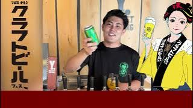
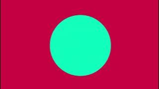
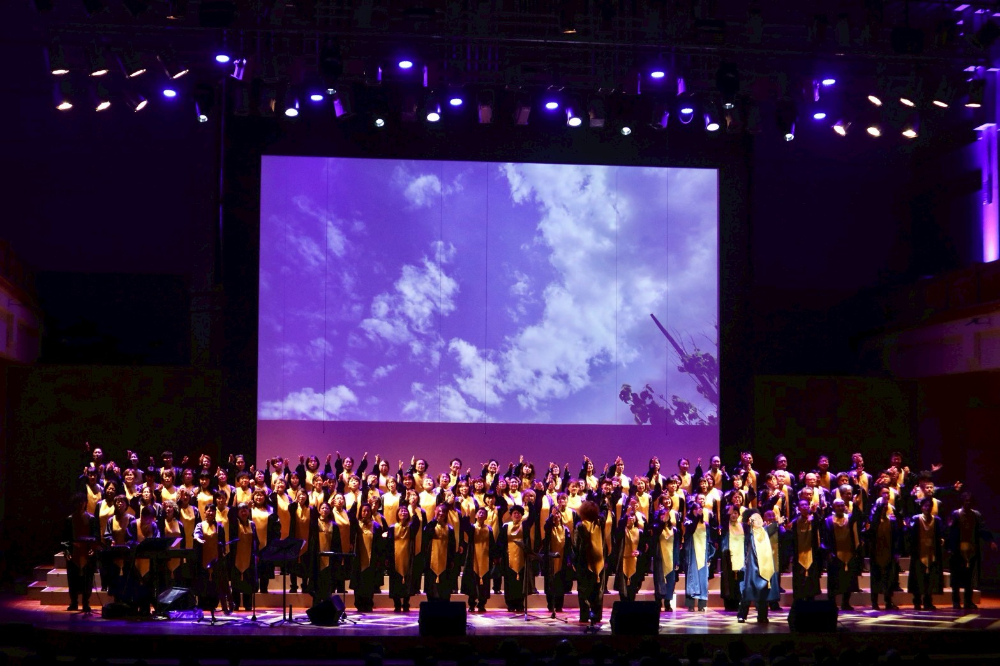

WORKS


CLIENT WORKS
これまでにお仕事をさせていただいた企業様との実績の一部です。

Anointed mass choir
ゴスペルで使われる背景動画の制作
ゴスペルのメッセージを視覚的に表現するための背景動画を制作しました。浜松の風景などを使い視覚やゴスペルの強調としてお客様に想いを伝える動画を制作しました。
絵コンテから撮影、編集までチームで協力し合いながら進め、100人を超えるお客様にご覧いただきました。
ABOUT ME
はじめまして、高山唯斗です。浜松未来総合専門学校でWEB制作・動画を学んでいます。
学業で得た知識と、挑戦をし続ける心意気でもっと実写やモーショングラフィックスなどに限らず、
動画の制作ができればと思います！若さとフットワークの軽さを武器に、挑戦し続けます。
SKILLS
- 動画編集 (Adobe Premiere Pro)
- モーショングラフィックス (Adobe After Effects)
- カラーグレーディング (DaVinci Resolve)
- 音響調整 (Sound Design)